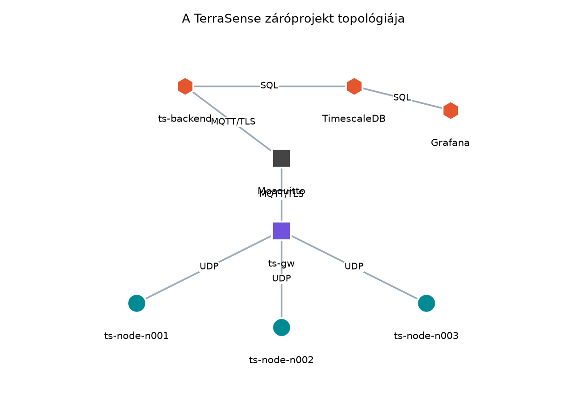
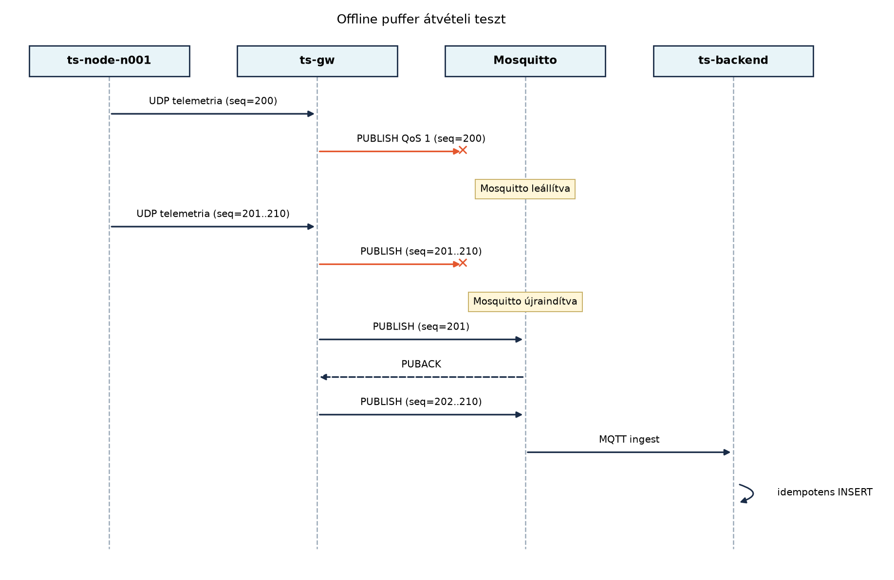

A TerraSense egyes rétegei a korábbi laborokban külön-külön már
működtek, de a rendszer akkor válik ténylegesen tesztelhetővé, ha minden
komponens egyszerre, egyetlen hálózatban fut. Ebben a záróprojektben a
cél nem új funkció fejlesztése, hanem az integráció: több szimulált
ts-node, a ts-gw, a TLS-es Mosquitto, a
ts-backend, a TimescaleDB és a Grafana összeállítása
egyetlen Compose-környezetben, majd annak bizonyítása, hogy a korábban
rögzített követelmények a teljes adatúton teljesülnek.
A laborok során a komponensek gyakran elszigetelten futottak: a
firmware-t native_sim alatt, a backendet tesztprofillal, a
brokert pedig ideiglenes konfigurációval indítottuk el. A valós
IoT-projektekben a hibák jelentős része éppen az integrációs határokon
jelentkezik: rossz tanúsítványútvonal, eltérő topic-konvenció, nem
egyező séma, tűzfal által blokkolt kapcsolat vagy nem megfelelő
konténer-függőségi sorrend. A záróprojekt ezeket a kockázatokat átvételi
tesztekkel kezeli.
A TerraSense követelményeit a Nem funkcionális követelmények: energia, költség, élettartam, megbízhatóság, biztonság alfejezetben és a későbbi laborokban fokozatosan pontosítottuk. A záróprojektben ezekből egy minimális, de mérhető átvételi követelménykészletet használunk: a telemetria eljut az eszköztől az adatbázisig, a parancsok és az eszközárnyék működnek, a gateway offline pufferel és visszatölt, a biztonságos csatorna kötelező, a hiányzó adat pedig riasztást vált ki.
Definíció. Az átvételi teszt (acceptance test) olyan fekete dobozos ellenőrzés, amely nem a fejlesztő feltételezéseit, hanem a megrendelői vagy rendszerkövetelményeket igazolja. Eredménye általában PASS vagy FAIL, és minden egyes átvételi teszthez egyértelműen hozzá kell rendelni legalább egy követelmény-azonosítót.
Definíció. A követelmény-nyomonkövetés (requirements traceability) az a táblázat vagy gráf, amely a követelményektől a tervdokumentumokon és a megvalósításon át a tesztekig mutatja a kapcsolatot. IoT-rendszereknél ez azért fontos, mert egy biztonsági vagy adatkezelési követelmény könnyen „elvész” a rétegek között.
Definíció. A Compose-profil olyan
jelölő, amellyel szolgáltatások egy csoportját csak akkor indítjuk el,
ha a profilt explicit módon bekapcsoljuk. Ezzel ugyanaz a
compose.yaml használható könnyű fejlesztői, teljes
integrációs vagy tesztelői módban.
A záróprojekt topológiája:

A szimulált ts-node konténerek ugyanazt az
üzenetformátumot használják, mint amit a Gateway
szerepe: híd, puffer, biztonsági határ alfejezetben definiáltunk:
JSON, benne node_id, monoton seq, UTC
ts epoch milliszekundumban, valamint a három szenzorérték
és a szelepállapot. A ts-gw ezt a
terrasense/gh1/<node>/telemetry topicra fordítja
MQTT-re, és a parancs-topicokról érkező üzeneteket UDP-n visszafelé
továbbítja a megfelelő node-nak.
A rendszerindítás a következő függőségi láncot követi:
ts-backend és a ts-gw csak akkor tekinti
magát késznek, ha a függőségei elérhetők.A záróprojektben három döntést érdemes tudatosan meghozni: mit mérjünk a teljes rendszeren, milyen tesztelési mélységet válasszunk, és hogyan kezeljük a szimulált node-ok számát.
| Döntés | Lehetőség | Előny | Hátrány | Választás a záróprojektben |
|---|---|---|---|---|
| Node-ok indítása | egy folyamat több node-dal | egyszerűbb erőforrás-gazdálkodás | nehezebb hibát izolálni | három külön konténer |
| TLS-teszt | csak konfiguráció ellenőrzése | gyors | nem bizonyítja a lezárt portot | aktív kapcsolódási kísérlet |
| Offline teszt | broker leállítása hosszú időre | valószerű | lassú | 35 másodperces leállás |
| Mérés | pontos idők naplózása | reprodukálható | több műszerezést igényel | SQL-alapú késleltetésbecslés |
A Compose-profilokat itt csak jelöljük, mert a záróprojektben az
összes szolgáltatás egy profilba kerül. Hasznos lehet azonban külön
profilt felvenni a node-szimulátorokra (sim) és a
megjelenítő rétegre (ui), hogy a backend-fejlesztés során
ne induljon el minden feleslegesen. A teljes záróprojekt az
alapértelmezett profillal indul.
A legtanulságosabb átvételi teszt a ts-gw offline
működését ellenőrzi. A Store-and-forward: offline
működés és visszatöltés alfejezetben elkészített SQLite-puffernek a
teljes rendszerben is meg kell őriznie az üzeneteket, ha a broker
átmenetileg nem elérhető. A forgatókönyv:

Az első PUBLISH azért vész el, mert a brokert a küldés
előtt leállítjuk. A ts-gw a Paho kliens hibajelzése után
nem törli a rekordot az SQLite-ból, hanem újrapróbálkozik. A node-ok
eközben továbbra is 10 másodpercenként küldenek UDP-csomagot, így a
pufferbe tíz új rekord kerül. Amikor a Mosquitto újraindul, a
ts-gw a pufferből seq szerint visszatölt, és
minden sikeres PUBACK után törli az adott rekordot. A
backend idempotens ingestje a node_id + seq párost
használja, így az újraküldött üzenetek nem okoznak duplikátumot.
Munkakönyvtár:
mkdir -p ~/iot-labor/i066 && cd ~/iot-labor/i066A labor előfeltétele a korábbi laborkimenetek megléte:
~/iot-labor/stack/certs/ – a labor-CA és a
kliens/szerver tanúsítványok az Biztonságos
kapcsolat: TLS 1.3, mTLS és DTLS az MQTT/CoAP alatt
alfejezetből;~/iot-labor/stack/mosquitto/ –
mosquitto.conf és acl.conf;~/iot-labor/i051/grafana-provisioning/ – Grafana
adatforrás és dashboard;~/iot-labor/i037/ts-gw/ – a ts-gw
forráskódja, beleértve a store-and-forward réteget;~/iot-labor/i043/ts-backend/ – a backend
forráskódja.A teljes compose.yaml a közös stack könyvtárba
kerül:
name: terrasense-lab
services:
mosquitto:
image: eclipse-mosquitto:2
ports:
- "8883:8883"
volumes:
- ./mosquitto/mosquitto.conf:/mosquitto/config/mosquitto.conf:ro
- ./mosquitto/acl.conf:/mosquitto/config/acl.conf:ro
- ./certs:/mosquitto/certs:ro
command: ["mosquitto", "-c", "/mosquitto/config/mosquitto.conf"]
timescaledb:
image: timescale/timescaledb:latest-pg16
environment:
POSTGRES_DB: terrasense
POSTGRES_USER: terrasense
POSTGRES_PASSWORD: lab_password
volumes:
- timescale-data:/var/lib/postgresql/data
healthcheck:
test: ["CMD-SHELL", "pg_isready -U terrasense -d terrasense"]
interval: 5s
timeout: 3s
retries: 12
ts-backend:
build: ../i043/ts-backend
depends_on:
mosquitto:
condition: service_started
timescaledb:
condition: service_healthy
ports:
- "8080:8080"
environment:
SPRING_DATASOURCE_URL: jdbc:postgresql://timescaledb:5432/terrasense
SPRING_DATASOURCE_USERNAME: terrasense
SPRING_DATASOURCE_PASSWORD: lab_password
MQTT_URI: ssl://mosquitto:8883
MQTT_CA_CERT: /certs/ca.crt
MQTT_CLIENT_CERT: /certs/backend.crt
MQTT_CLIENT_KEY: /certs/backend.key
volumes:
- ./certs:/certs:ro
ts-gw:
build: ../i037/ts-gw
depends_on:
- mosquitto
environment:
BROKER_URI: ssl://mosquitto:8883
CA_FILE: /certs/ca.crt
CERT_FILE: /certs/gw.crt
KEY_FILE: /certs/gw.key
UDP_PORT: "9000"
NODE_n001: ts-node-n001
NODE_n002: ts-node-n002
NODE_n003: ts-node-n003
volumes:
- ./certs:/certs:ro
- gw-store:/data
ts-node-n001:
image: python:3.12-slim
depends_on:
- ts-gw
environment:
NODE_ID: n001
GW_HOST: ts-gw
GW_PORT: "9000"
LISTEN_PORT: "9000"
volumes:
- ./ts_node_sim.py:/app/ts_node_sim.py:ro
command: ["python", "/app/ts_node_sim.py"]
ts-node-n002:
image: python:3.12-slim
depends_on:
- ts-gw
environment:
NODE_ID: n002
GW_HOST: ts-gw
GW_PORT: "9000"
LISTEN_PORT: "9000"
volumes:
- ./ts_node_sim.py:/app/ts_node_sim.py:ro
command: ["python", "/app/ts_node_sim.py"]
ts-node-n003:
image: python:3.12-slim
depends_on:
- ts-gw
environment:
NODE_ID: n003
GW_HOST: ts-gw
GW_PORT: "9000"
LISTEN_PORT: "9000"
volumes:
- ./ts_node_sim.py:/app/ts_node_sim.py:ro
command: ["python", "/app/ts_node_sim.py"]
grafana:
image: grafana/grafana:11.2.0
depends_on:
- timescaledb
ports:
- "3000:3000"
environment:
GF_SECURITY_ADMIN_PASSWORD: lab_admin
volumes:
- ../i051/grafana-provisioning/datasources:/etc/grafana/provisioning/datasources:ro
- ../i051/grafana-provisioning/dashboards:/etc/grafana/provisioning/dashboards:ro
volumes:
timescale-data:
gw-store:A ts-node-sim szimulátor a
~/iot-labor/stack/ts_node_sim.py fájlban:
import json
import os
import random
import socket
import time
NODE_ID = os.environ.get("NODE_ID", "n001")
GW_HOST = os.environ.get("GW_HOST", "ts-gw")
GW_PORT = int(os.environ.get("GW_PORT", "9000"))
LISTEN_PORT = int(os.environ.get("LISTEN_PORT", "9000"))
sock = socket.socket(socket.AF_INET, socket.SOCK_DGRAM)
sock.bind(("0.0.0.0", LISTEN_PORT))
sock.settimeout(1.0)
seq = 0
valve = 0
while True:
seq += 1
telemetry = {
"node_id": NODE_ID,
"seq": seq,
"ts": int(time.time() * 1000),
"temp": round(random.uniform(18.0, 28.0), 2),
"hum": round(random.uniform(45.0, 75.0), 2),
"soil": round(random.uniform(20.0, 60.0), 2),
"valve": valve,
}
sock.sendto(json.dumps(telemetry).encode(), (GW_HOST, GW_PORT))
try:
data, addr = sock.recvfrom(2048)
command = json.loads(data)
if command.get("type") == "valve":
valve = int(command["params"].get("open", valve))
result = {
"node_id": NODE_ID,
"id": command["id"],
"state": "SUCCESS",
"result": {"valve": valve},
"ts": int(time.time() * 1000),
}
sock.sendto(json.dumps(result).encode(), (GW_HOST, GW_PORT))
except socket.timeout:
pass
time.sleep(10)A szimulátor szándékosan egyszerű, de a valós eszköz három fontos
tulajdonságát megtartja: monoton seq, UTC epoch ms
időbélyeg, valamint a parancsra adott korrelált válasz.
Az átvételi tesztek a
~/iot-labor/i066/acceptance_test.sh fájlban:
#!/usr/bin/env bash
set -euo pipefail
STACK_DIR="$HOME/iot-labor/stack"
cd "$STACK_DIR"
echo "== TerraSense átvételi tesztek =="
echo "[T1] Telemetria adatút"
sleep 30
COUNT=$(docker compose exec -T timescaledb psql -U terrasense -d terrasense -t \
-c "SELECT count(DISTINCT node_id) FROM telemetry;")
if [ "$COUNT" -ge 3 ]; then echo "PASS: ${COUNT} node telemetriája érkezett"; else echo "FAIL"; exit 1; fi
echo "[T2] Parancs és eszközárnyék"
curl -s -X POST http://localhost:8080/api/commands \
-H 'Content-Type: application/json' \
-d '{"site":"gh1","node":"n001","type":"valve","params":{"open":1}}' >/dev/null
sleep 20
STATE=$(docker compose exec -T timescaledb psql -U terrasense -d terrasense -t \
-c "SELECT state FROM device_command ORDER BY created_at DESC LIMIT 1;")
if [ "$STATE" != "SUCCESS" ]; then echo "FAIL: parancs állapot: $STATE"; exit 1; fi
echo "PASS: parancs végrehajtva és nyugtázva"
echo "[T3] Offline puffer és visszatöltés"
docker compose stop mosquitto >/dev/null
sleep 35
docker compose start mosquitto >/dev/null
sleep 20
MAX_SEQ=$(docker compose exec -T timescaledb psql -U terrasense -d terrasense -t \
-c "SELECT max(seq) FROM telemetry WHERE node_id='n001';")
if [ "$MAX_SEQ" -gt 100 ]; then echo "PASS: visszatöltés megtörtént (max seq=$MAX_SEQ)"; else echo "FAIL"; exit 1; fi
echo "[T4] TLS-nélküli kapcsolat elutasítása"
if mosquitto_pub -h localhost -p 1883 -t test -m test 2>/dev/null; then
echo "FAIL: a titkosítatlan port elérhető"; exit 1
else
echo "PASS: a 1883-as port nem elérhető"
fi
echo "[T5] Hiányzó adat riasztása"
docker compose stop ts-node-n003 >/dev/null
sleep 75
MISSING=$(docker compose exec -T timescaledb psql -U terrasense -d terrasense -t \
-c "SELECT count(*) FROM missing_data_alert WHERE node_id='n003';")
docker compose start ts-node-n003 >/dev/null
if [ "$MISSING" -ge 1 ]; then echo "PASS: hiányzó adat riasztás keletkezett"; else echo "FAIL"; exit 1; fi
echo "== Minden átvételi teszt PASS =="A missing_data_alert nézetet egyszeri SQL-lel hozzuk
létre:
CREATE OR REPLACE VIEW missing_data_alert AS
SELECT node_id,
now() AS alert_ts,
extract(epoch FROM now() - max(ingest_ts)) AS missing_seconds
FROM telemetry
GROUP BY node_id
HAVING now() - max(ingest_ts) > interval '60 seconds';Indítás:
cd ~/iot-labor/stack
docker compose up -d --build
cd ~/iot-labor/i066
chmod +x acceptance_test.sh
./acceptance_test.shA labor után a takarítás:
cd ~/iot-labor/stack
docker compose down -vA -v kapcsoló a timescale-data és
gw-store köteteket is törli, ezért csak a záróprojekt
laborja után használjuk.
A tesztek futtatása előtt érdemes a docker compose ps
kimenetét ellenőrizni. Minden szolgáltatásnak Up vagy
healthy állapotban kell lennie.
| Tünet | Valószínű ok | Javítás |
|---|---|---|
A ts-gw nem csatlakozik a brokerhez |
rossz CA-útvonal vagy ACL | docker compose logs ts-gw, ellenőrizze a
/certs/ca.crt mountot |
| A backend nem éri el a TimescaleDB-t | a healthcheck még nem futott le | docker compose logs timescaledb, várjon 30–60
másodpercet |
A T2 parancs mindig PENDING |
a node nem kapja meg a parancsot | docker compose logs ts-node-n001, ellenőrizze a
cmd topic feliratkozást |
| A Grafana nem mutat adatot | rossz adatforrás UID vagy TimescaleDB host | docker compose logs grafana, ellenőrizze a provisioning
fájlokat |
A T3 nem növeli a max(seq)-t |
a ts-gw puffer nem perzisztens, vagy a broker leállítás után a node nem küldött | ellenőrizze a gw-store kötetet és a script
időzítését |
A méréshez a ts-node-sim a ts mezőben
rögzíti az esemény időpontját, a backend ingestje pedig az adatbázisba
írás pillanatában egy szerver oldali ingest_ts értéket ad.
A késleltetés:
A laborban ezt SQL-lel becsülhetjük:
SELECT node_id,
avg(ingest_ts - ts) AS avg_latency_ms,
count(*) AS messages
FROM telemetry
WHERE ingest_ts > now() - interval '5 minutes'
GROUP BY node_id;A várt késleltetés labor-környezetben jellemzően néhány tíz és néhány
száz milliszekundum között van, de ez erősen gépfüggő. A mért értékeket
emiatt nem szabad valós eszközre általánosítani; a
native_sim időzítése sem hardverhű. A veszteség becsléséhez
a szimulátor seq értékeit hasonlíthatjuk a tárolt
rekordokhoz:
SELECT node_id,
count(*) AS stored_messages,
max(seq) - min(seq) + 1 AS expected_messages
FROM telemetry
WHERE ingest_ts > now() - interval '5 minutes'
GROUP BY node_id;A kettő különbsége a laborban várhatóan nulla, mert a QoS 1 és az idempotens ingest együttesen at-least-once kézbesítést ad. Kis veszteséget okozhat, ha a szimulátor a brokerleállás alatt indult, de a puffer ezt is visszatölti.
compose.yaml véletlenül publikálja, a T4 teszt ezt
azonnal jelzi. A TLS-teszt csak akkor értékes, ha tényleges kapcsolódási
kísérletet hajtunk végre, nem csak a konfigurációt olvassuk el.ts-gw ki sem érzékeli a kapcsolat megszakadását, mert a
Paho kliens belső újracsatlakozási időzítője tovább próbálkozik. A 35
másodperc ebben a laborban tudatosan hosszabb, mint a 10 másodperces
telemetria-intervallum.POST kérésre legfeljebb a parancs elfogadását tudja
visszaadni, a tényleges nyugta a cmd/result úton érkezik.
Ezért kell a tesztben SQL-lel ellenőrizni az állapotgépet.node_id + seq elsődleges kulcs nélkül a teszt
duplikátumokat eredményezne, és a mérési statisztika tévesen magas
üzenetszámot mutatna.ts-gw MQTT-üzeneteit figyelni? Milyen hiba
maradhat rejtve, ha az adatbázist nem ellenőrizzük?acceptance_test.sh-t egy további ts-node-n004
szolgáltatással, és módosítsa a T1 tesztet úgy, hogy négy node-ot
várjon.TIMEOUT állapotba kerül, pedig a node fut. Soroljon fel
legalább három lehetséges okot, és mindegyikhez adjon ellenőrzési
lépést.A ts-gw MQTT-üzenetei csak azt bizonyítják, hogy a
gateway publikált. Ha a backend nem iratkozott fel a telemetry topicra,
vagy az idempotens ingest elutasítja az üzeneteket, az adatbázis üres
maradhat. A T1 az adatbázisban a node_id-k számát
ellenőrzi, így a teljes lánc működését igazolja.
A node-ok száma , az intervallum s, így node-onként naponta üzenet keletkezik. Összesen üzenet. A napi nyers adatmennyiség .
A compose.yaml-be fel kell venni a
ts-node-n004 szolgáltatást a ts-node-n003
mintájára, NODE_ID: n004 értékkel, és a ts-gw
NODE_n004 környezeti változóját is. A T1 tesztben a
küszöböt négyre kell emelni.
Lehetséges okok:
cmd topicra a ts-gw nem iratkozott fel,
ezért a parancs nem jut el a node-hoz. Ellenőrzés:
docker compose logs ts-gw, keresse a feliratkozási
hibát.docker compose exec ts-node-n001 python -c "import socket; print(socket.getsockname())"
vagy napló.expiry mezője túl rövid, és a backend még a
kézbesítés előtt lejártként kezeli. Ellenőrzés: a
device_command tábla expiry és
state mezője.cmd/result válasz nem megfelelő id-t
használ, ezért a backend nem tudja korrelálni. Ellenőrzés: a gateway
naplójában a publikált cmd/result üzenet id
mezője.A záróprojektben a TerraSense rendszert egyetlen Compose-környezetben
állítottuk össze. A ~/iot-labor/stack/compose.yaml
tartalmazza a TLS-es Mosquittót, a TimescaleDB-t, a
ts-backend-et, a ts-gw-t, három szimulált
ts-node-ot és a Grafanát. A szimulátor
ts_node_sim.py UDP-n telemetriát küld és parancsokat fogad.
Az acceptance_test.sh öt átvételi tesztet futtat: T1
telemetria adatút, T2 parancs és árnyék, T3 offline puffer és
visszatöltés, T4 TLS-nélküli kapcsolat elutasítása, T5 hiányzó adat
riasztása. Továbbvitt eredmény. A
compose.yaml, a ts_node_sim.py, az
acceptance_test.sh és az átvételi jegyzőkönyv eredményei az
Összefoglalás: döntési térkép, ellenőrzőlista,
továbbtanulás alfejezetben a döntési térkép és az ellenőrzőlista
kiindulópontjai.
depends_on és a
profilok pontos szintaxisa a Docker dokumentációjában
ellenőrizendő.timescale/timescaledb:latest-pg16 és a
grafana/grafana:11.2.0 konténerkép elérhető verziója a
Docker Hub-on ellenőrizendő.ts-backend image buildje a ts-backend
forráskód aktuális állapotától függ; a Spring Boot és a Paho Java kliens
pontos konfigurációja a korábbi laborokban rögzített.ts-gw Paho C++ kliens
PUBLISH/PUBACK viselkedését a Paho
dokumentációja és a MQTT QoS, munkamenetek, retain,
Last Will és MQTT 5 alfejezet alapján használtuk; a pontos socket-
és TLS-API a Paho verziójától függ.